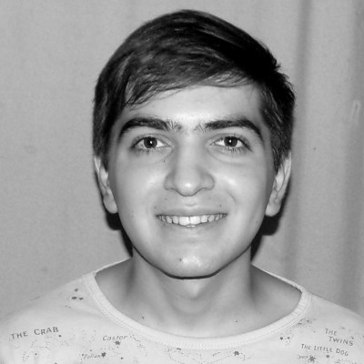
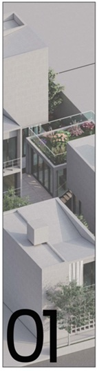
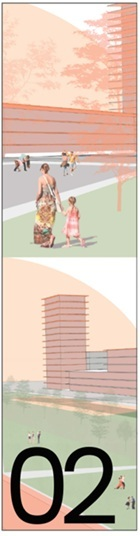
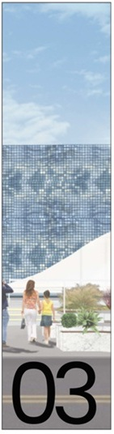
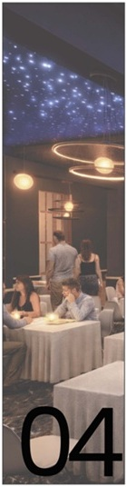
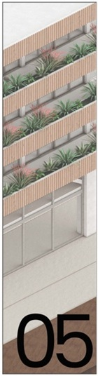

Agustin Girona · Arquitectura
"Diseñar espacios que cuentan historias, donde la luz y la materia dialogan"
MAESTRO MAYOR DE OBRAS · ARQUITECTURA último año
Soy Maestro mayor de obras con formación técnica, y estudiante de arquitectura (cursando el último año), con conocimiento en documentación / gestión técnica y visualización arquitectónica. De perfil autodidacta y apasionado por el desarrollo técnico, detalles constructivos y el diseño. Busco un espacio de trabajo donde pueda aplicar y expandir mis conocimientos.
— Manuel Agustín Girona Lopez, MMO · Arquitectura

Formación integral con enfoque en proyecto, tecnología y ciudad.
Título técnico con promedio general de 9,65. Abanderado de la Bandera Nacional.
Alumno adscripto bajo la titularidad de la Dra. Arq. Mariana Debat.
Dibujo técnico, relevamientos, diseño de proyectos, modelado 3D, gestoría de planos y presupuestos.
Confección de planos, gestión municipal, anteproyectos, renders y asesoría técnica en Capilla del Monte, La Cumbre, Villa Giardino, San Esteban, Charbonier.
Preparación en Estructuras 1/2/3, Instalaciones, Matemática, Inglés e Historia.

Proyecto de arquitectura · 2024

Cerdanyola de Valles, Catalunia, España · 2023

Proyecto de arquitectura · 2024

Proyecto de arquitectura · 2025

Diseño urbano · 2025